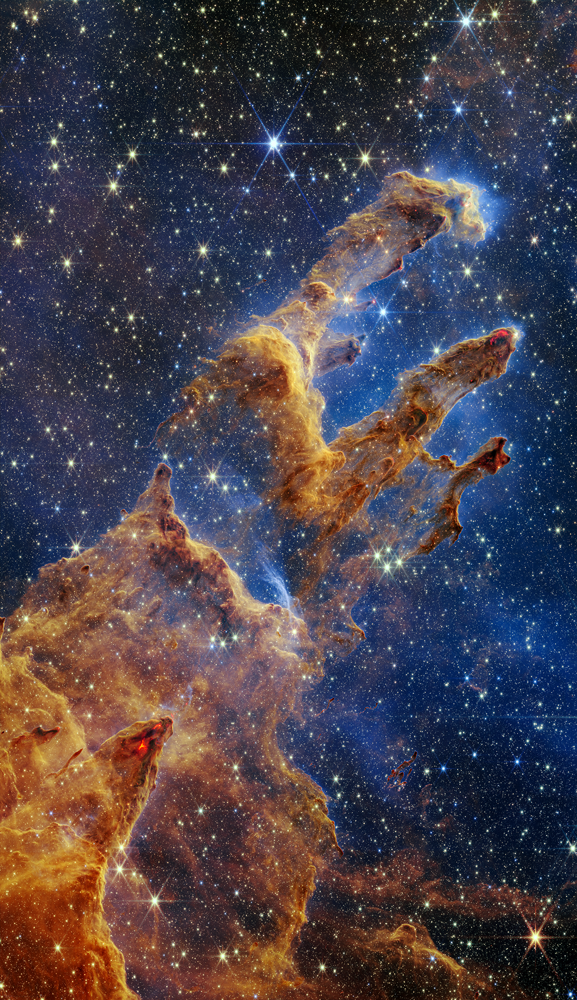
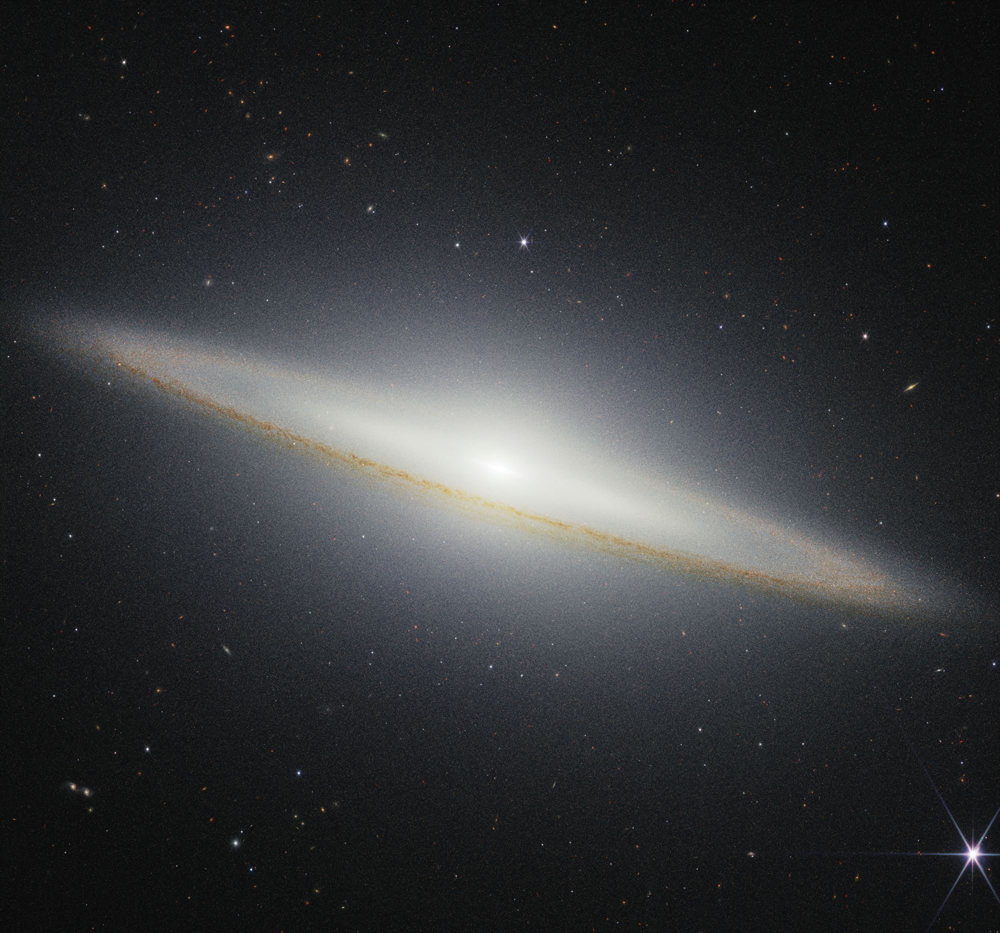
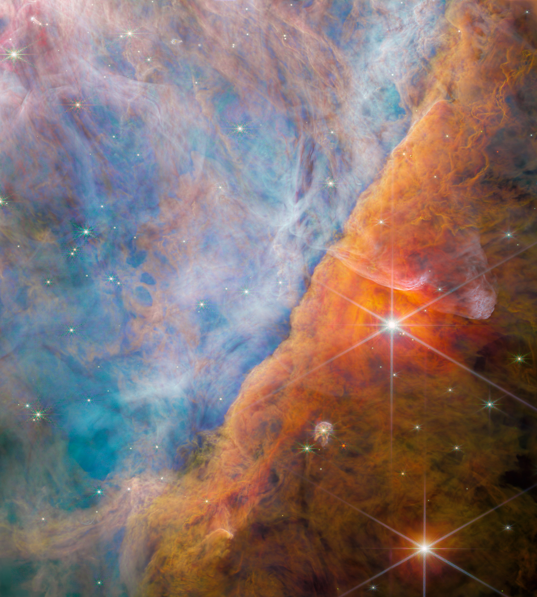
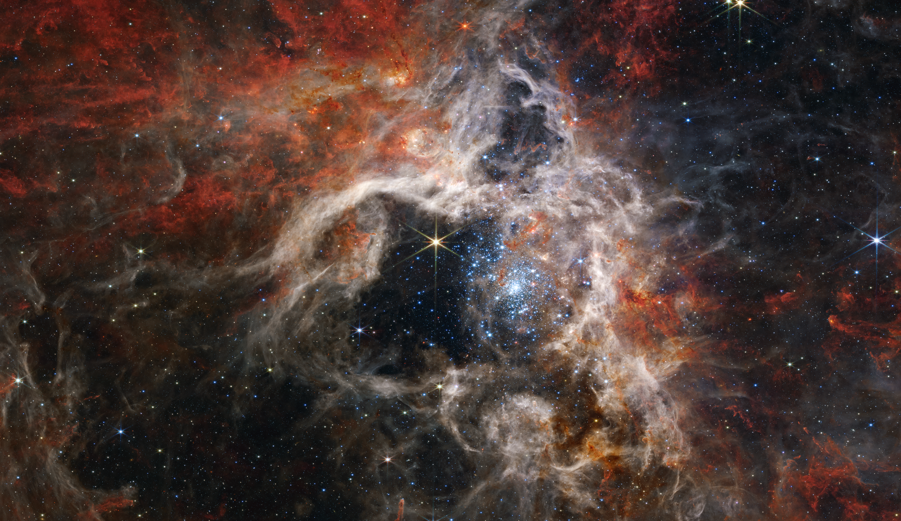
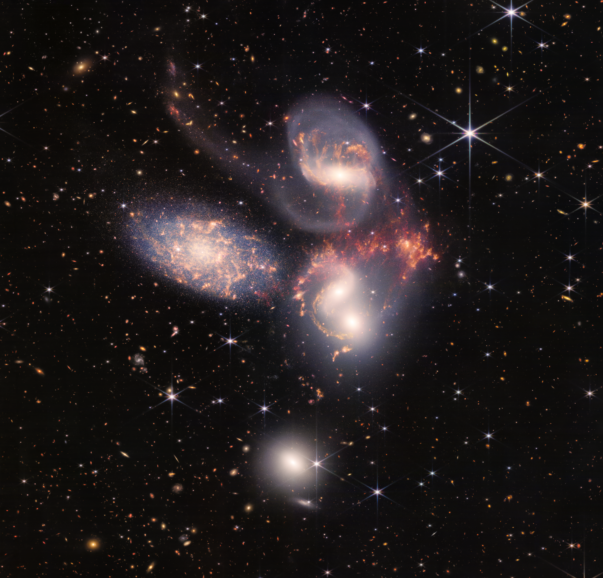

Pilares da Criação
Gigantescas estruturas de gás e poeira na Nebulosa da Águia. Distância: 6.500 anos-luz.

Navegue pelas capturas em alta resolução mais impressionantes do infravermelho profundo. Clique em qualquer foto para ampliar.
Gigantescas estruturas de gás e poeira na Nebulosa da Águia. Distância: 6.500 anos-luz.

A imponente galáxia M104 vista quase de perfil, a cerca de 30 milhões de anos-luz da Terra.

A intensa radiação de estrelas jovens esculpindo o gás ao seu redor (Barra de Órion).

A maior e mais brilhante região de formação de estrelas, localizada na Grande Nuvem de Magalhães.

Um espetáculo gravitacional: um grupo de galáxias colidindo e interagindo no espaço profundo.

Para ver os arquivos originais, acesse a Galeria Oficial da NASA.